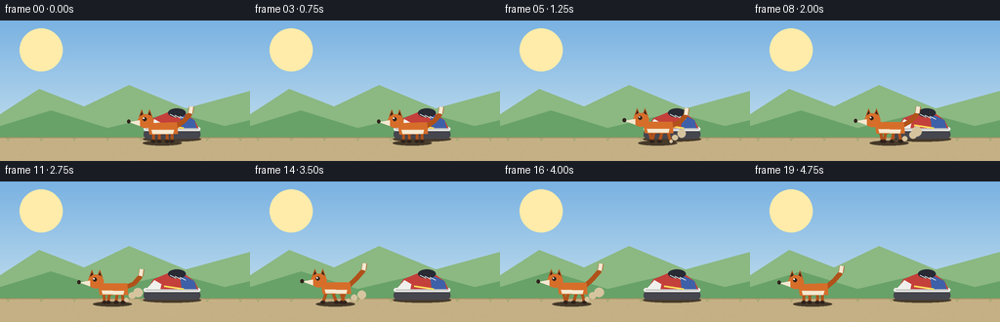
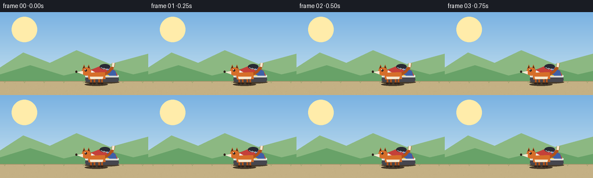

CODING AGENTS AS PIXEL WORLD MODELS
traex/Seed-2.1-Pro-0915 · dynamic_spatial_relationship_0026
点击播放 · 原生 RGB 像素
逐轮保存的候选
回放视频、检查图与代码变化。
每份候选均可单独播放。实际图片检查记录在下方工具轨迹中。
候选 01播放与检查图
点击播放 · 原生 RGB 像素


展开代码变化
--- 上一保存版本
+++ 本次保存版本
@@ -0,0 +1,221 @@
+"""Procedural text-to-video: a fox in front of a shoe runs to its left.
+
+Renders 20 RGB frames (256x144, 4 fps) entirely with numpy + PIL:
+a fixed sneaker, a fox that starts in front of the shoe, then runs
+left with a leg cycle, body bob, tail wag and dust puffs.
+"""
+import math
+
+import numpy as np
+from PIL import Image, ImageDraw
+
+import artifact_io
+
+W, H, N, FPS = 256, 144, 20, 4.0
+S = 3 # supersampling factor for smooth edges
+
+GROUND_Y = 120 # top of the ground strip
+SHOE_X = 176 # fixed shoe anchor
+FOX_START_X = 166 # fox begins in front of (overlapping) the shoe
+FOX_END_X = 64 # fox finishes clearly to the left of the shoe
+FOX_FEET = 124 # slightly lower than the shoe -> closer to viewer
+
+ORANGE = (214, 110, 42)
+ORANGE_D = (176, 82, 26)
+CREAM = (245, 232, 208)
+DARK = (48, 34, 28)
+SHOE_RED = (196, 64, 58)
+SHOE_BLUE = (62, 96, 168)
+
+
+def sc(points):
+ return [(x * S, y * S) for x, y in points]
+
+
+def smoothstep(t):
+ t = max(0.0, min(1.0, t))
+ return t * t * (3 - 2 * t)
+
+
+def make_background():
+ """Sky gradient, sun, layered hills and textured ground."""
+ small = np.zeros((H, W, 3), dtype=np.uint8)
+ top = np.array([122, 178, 226])
+ bottom = np.array([206, 230, 240])
+ for y in range(H):
+ f = y / (H - 1)
+ small[y, :, :] = (top * (1 - f) + bottom * f).astype(np.uint8)
+ img = Image.fromarray(small).resize((W * S, H * S), Image.BILINEAR).convert("RGBA")
+ d = ImageDraw.Draw(img)
+
+ # Sun with soft glow
+ sx, sy = 42 * S, 30 * S
+ for r, a in ((22, 26), (16, 40), (11, 255)):
+ d.ellipse([sx - r * S, sy - r * S, sx + r * S, sy + r * S],
+ fill=(255, 236, 170, a))
+
+ # Far and near hills
+ d.polygon(sc([(0, 96), (40, 70), (86, 88), (132, 66), (190, 90),
+ (256, 72), (256, GROUND_Y + 4), (0, GROUND_Y + 4)]),
+ fill=(140, 184, 130, 255))
+ d.polygon(sc([(0, 108), (52, 92), (110, 110), (178, 94), (230, 108),
+ (256, 102), (256, GROUND_Y + 4), (0, GROUND_Y + 4)]),
+ fill=(104, 162, 104, 255))
+
+ # Ground
+ d.rectangle([0, GROUND_Y * S, W * S, H * S], fill=(196, 176, 132, 255))
+ d.line([0, GROUND_Y * S, W * S, GROUND_Y * S],
+ fill=(168, 146, 104, 255), width=S)
+ rng = np.random.default_rng(7)
+ for _ in range(260): # ground speckles
+ x = int(rng.integers(0, W))
+ y = int(rng.integers(GROUND_Y + 2, H))
+ c = (168, 146, 104, 120) if rng.random() < 0.5 else (214, 196, 154, 120)
+ d.point((x * S, y * S), fill=c)
+ for x in range(8, W, 34): # grass tufts
+ d.line(sc([(x, GROUND_Y + 3), (x - 2, GROUND_Y - 2)]),
+ fill=(110, 150, 86, 255), width=max(1, S // 2))
+ d.line(sc([(x, GROUND_Y + 3), (x + 2, GROUND_Y - 1)]),
+ fill=(110, 150, 86, 255), width=max(1, S // 2))
+ return img
+
+
+def draw_shadow(d, cx, feet_y, width, alpha):
+ d.ellipse(sc([(cx - width, feet_y - 2), (cx + width, feet_y + 3)]),
+ fill=(70, 58, 42, alpha))
+
+
+def draw_shoe(d, cx, feet_y):
+ """Side-view sneaker facing left."""
+ x0, x1 = cx - 27, cx + 27
+ sole_top = feet_y - 8
+ draw_shadow(d, cx, feet_y + 1, 30, 90)
+ # Outsole and midsole
+ d.rounded_rectangle(sc([(x0 - 2, sole_top), (x1 + 2, feet_y + 1)]),
+ radius=4 * S, fill=(70, 70, 78, 255))
+ d.rounded_rectangle(sc([(x0 - 2, sole_top - 3), (x1 + 2, sole_top + 1)]),
+ radius=3 * S, fill=(238, 238, 234, 255))
+ # Upper body
+ d.polygon(sc([(x0 + 2, sole_top - 2), (x0 + 8, feet_y - 20),
+ (cx - 2, feet_y - 27), (cx + 12, feet_y - 26),
+ (x1 - 4, feet_y - 18), (x1, sole_top - 2)]),
+ fill=SHOE_RED)
+ # Heel counter
+ d.polygon(sc([(cx + 8, feet_y - 25), (x1 - 4, feet_y - 18),
+ (x1 - 2, sole_top - 2), (cx + 10, sole_top - 2)]),
+ fill=SHOE_BLUE)
+ # Toe cap
+ d.polygon(sc([(x0 + 1, sole_top - 2), (x0 + 9, feet_y - 19),
+ (x0 + 16, feet_y - 15), (x0 + 15, sole_top - 2)]),
+ fill=(240, 240, 236, 255))
+ # Collar opening
+ d.ellipse(sc([(cx - 4, feet_y - 30), (cx + 14, feet_y - 21)]),
+ fill=(40, 42, 52, 255))
+ # Sole stripe and laces
+ d.line(sc([(x0, sole_top - 1), (x1, sole_top - 1)]),
+ fill=(180, 180, 178, 255), width=S)
+ for k in range(3):
+ lx = cx - 2 + k * 5
+ d.line(sc([(lx, feet_y - 24 + k), (lx + 6, feet_y - 21 + k)]),
+ fill=(245, 245, 240, 255), width=S)
+ # Side stripe
+ d.line(sc([(cx - 8, feet_y - 13), (cx + 12, feet_y - 10)]),
+ fill=(250, 220, 90, 255), width=2 * S)
+
+
+def draw_fox(d, cx, feet_y, phase, moving, dust_seed):
+ """Side-view fox facing left. phase drives the run cycle."""
+ bob = -abs(math.sin(phase)) * 1.8 if moving else 0.0
+ lean = 0.10 if moving else 0.0
+ hip_y = feet_y - 13 + bob
+ head_x, head_y = cx - 17, feet_y - 21 + bob
+
+ draw_shadow(d, cx, feet_y + 1, 20, 70 if moving else 95)
+
+ # Tail: curves up behind the body, wagging, cream tip
+ wag = math.sin(phase * 0.7) * 3 if moving else math.sin(phase * 0.2) * 1.5
+ tail_pts = [(cx + 13, hip_y - 2), (cx + 22, hip_y - 8 + wag),
+ (cx + 29, hip_y - 16 + wag), (cx + 30, hip_y - 23 + wag)]
+ for a, b in zip(tail_pts[:-1], tail_pts[1:]):
+ d.line(sc([a, b]), fill=ORANGE_D, width=5 * S, joint="curve")
+ d.line(sc([tail_pts[-2], tail_pts[-1]]), fill=CREAM, width=4 * S, joint="curve")
+
+ # Legs: diagonal pairs swinging out of phase, dark paws
+ swing = math.sin(phase) * 5.0 if moving else 0.0
+ legs = [(-9, swing), (-3, -swing), (5, -swing), (10, swing)]
+ for hip_dx, fx in legs:
+ hx, hy = cx + hip_dx, hip_y + 3
+ foot = (cx + hip_dx + fx, feet_y)
+ d.line(sc([(hx, hy), foot]), fill=ORANGE_D, width=3 * S)
+ d.ellipse(sc([(foot[0] - 2.5, foot[1] - 2),
+ (foot[0] + 2.5, foot[1] + 1.5)]), fill=DARK)
+
+ # Body (leaned forward while running)
+ body = [(cx - 15, hip_y - 6), (cx + 15, hip_y - 7 + lean * 8),
+ (cx + 16, hip_y + 5 + lean * 6), (cx - 13, hip_y + 6)]
+ d.polygon(sc(body), fill=ORANGE)
+ # Cream belly
+ d.polygon(sc([(cx - 11, hip_y + 1), (cx + 12, hip_y + 1 + lean * 5),
+ (cx + 11, hip_y + 5 + lean * 5), (cx - 10, hip_y + 5)]),
+ fill=CREAM)
+
+ # Ears
+ for ex in (head_x - 4, head_x + 4):
+ d.polygon(sc([(ex - 3, head_y - 4), (ex, head_y - 12),
+ (ex + 3, head_y - 4)]), fill=ORANGE_D)
+ d.polygon(sc([(ex - 1.4, head_y - 5), (ex, head_y - 9.5),
+ (ex + 1.4, head_y - 5)]), fill=DARK)
+ # Skull + cheek
+ d.ellipse(sc([(head_x - 8, head_y - 7), (head_x + 8, head_y + 7)]), fill=ORANGE)
+ # Snout pointing left
+ d.polygon(sc([(head_x - 6, head_y - 1), (head_x - 17, head_y + 1),
+ (head_x - 6, head_y + 5)]), fill=CREAM)
+ d.ellipse(sc([(head_x - 19, head_y - 1.5),
+ (head_x - 15.5, head_y + 2.5)]), fill=DARK) # nose
+ # Eye with highlight
+ d.ellipse(sc([(head_x - 3, head_y - 4), (head_x + 1, head_y)]), fill=DARK)
+ d.ellipse(sc([(head_x - 2.4, head_y - 3.4),
+ (head_x - 1.2, head_y - 2.2)]), fill=(255, 255, 255, 255))
+
+ # Dust puffs kicked up behind the feet while running
+ if moving:
+ rng = np.random.default_rng(dust_seed)
+ for k in range(3):
+ age = (phase * 0.4 + k * 0.9) % 2.7
+ px = cx + 12 + age * 7 + rng.uniform(-1.5, 1.5)
+ py = feet_y - 1 - age * 4 + rng.uniform(-1, 1)
+ r = 1.6 + age * 1.4
+ alpha = int(max(0, 110 - age * 42))
+ d.ellipse(sc([(px - r, py - r), (px + r, py + r)]),
+ fill=(214, 196, 158, alpha))
+
+
+def render_frame(i, background):
+ img = background.copy()
+ d = ImageDraw.Draw(img)
+
+ # Hold in front for the first frames, then run left with easing.
+ p = smoothstep((i - 3) / 16.0)
+ cx = FOX_START_X + (FOX_END_X - FOX_START_X) * p
+ moving = i >= 4 and p < 0.999
+ travel = FOX_START_X - cx
+ phase = travel * 0.55 + (i * 0.6 if i < 4 else 0.0)
+
+ draw_shoe(d, SHOE_X, GROUND_Y)
+ draw_fox(d, cx, FOX_FEET, phase, moving, dust_seed=1000 + i)
+
+ out = img.convert("RGB").resize((W, H), Image.LANCZOS)
+ return np.asarray(out, dtype=np.uint8)
+
+
+def main():
+ background = make_background()
+ frames = [render_frame(i, background) for i in range(N)]
+ artifact_io.save(frames, ".")
+ arr = np.stack(frames)
+ print("saved", arr.shape, arr.dtype)
+ print("fox x start =", FOX_START_X, " end =", FOX_END_X, " shoe x =", SHOE_X)
+
+
+if __name__ == "__main__":
+ main()
可观测工具轨迹
实际执行的命令与返回图片。
命令 1exit 0
/bin/bash -lc 'cat prompt.txt GENERATION_RULES.md task_spec.json'
命令 2exit 0
/bin/bash -lc "ls -la; find . -maxdepth 2 -name '*.py' | head; python -c \"import artifact_io\" 2>&1 | tail -2"
命令 3exit 0
/bin/bash -lc 'cat artifact_io.py'
命令 4exit 0
/bin/bash -lc 'cd "$(pwd)" && python generate.py && ls -la'
命令 5exit 0
/bin/bash -lc "python - <<'EOF'
import numpy as np
from PIL import Image
def orange_mask(a):
r,g,b = a[...,0].astype(int),a[...,1].astype(int),a[...,2].astype(int)
return (r>150)&(g>55)&(g<150)&(b<90)&(r-g>60)
def red_shoe(a):
r,g,b = a[...,0].astype(int),a[...,1].astype(int),a[...,2].astype(int)
return (r>150)&(g<100)&(b<100)&(r-g>70)
for i in [0,3,4,8,12,16,19]:
a=np.array(Image.open(f\"frames/{i:02d}.png\"))
m=orange_mask(a); ys,xs=np.where(m)
shoe=np.where(red_shoe(a))[1]
print(f\"frame {i:2d}: fox n={m.sum():4d} cx={xs.mean():6.1f} x[{xs.min():3d},{xs.max():3d}] | shoe red x[{shoe.min() if shoe.size else -1:3d},{shoe.max() if shoe.size else -1:3d}]\")
# shoe stability: red pixel count per frame should be constant-ish
counts=[red_shoe(np.array(Image.open(f\"frames/{i:02d}.png\"))).sum() for i in range(20)]
print(\"red shoe px counts:\", counts)
EOF"命令 6exit 0
/bin/bash -lc "python - <<'EOF'
import numpy as np
from PIL import Image
def fox_only(a): # strict orange: green high enough to exclude the red sneaker
r,g,b = a[...,0].astype(int),a[...,1].astype(int),a[...,2].astype(int)
return (r>150)&(g>=95)&(g<150)&(b<90)&(r-g>50)
def shoe_only(a):
r,g,b = a[...,0].astype(int),a[...,1].astype(int),a[...,2].astype(int)
return (r>150)&(g<95)&(b<100)
for i in [0,4,10,15,19]:
a=np.array(Image.open(f\"frames/{i:02d}.png\"))
f=fox_only(a); s=shoe_only(a)
fx=np.where(f)[1]; sx=np.where(s)[1]
print(f\"f{i:02d} fox x[{fx.min():3d},{fx.max():3d}] cx={fx.mean():6.1f} | shoe x[{sx.min():3d},{sx.max():3d}] | overlap={'YES' if fx.max()>sx.min() else 'no'}\")
# frame-to-frame difference grows while running, ~0 during the initial hold
prev=np.array(Image.open(\"frames/00.png\"))
for i in range(1,20):
cur=np.array(Image.open(f\"frames/{i:02d}.png\"))
print(i, int((cur"'!=prev).any(-1).sum()), end=" ")
prev=cur
print()
EOF'命令 7exit 0
/bin/bash -lc "python - <<'EOF'
import numpy as np
from PIL import Image
def fox_only(a):
r,g,b = a[...,0].astype(int),a[...,1].astype(int),a[...,2].astype(int)
return (r>180)&(g>=100)&(g<140)&(b<80) # saturated fox orange only
SHOE_LEFT=149
for i in [0,3,7,11,15,19]:
a=np.array(Image.open(f\"frames/{i:02d}.png\"))
xs=np.where(fox_only(a))[1]
left=(xs<SHOE_LEFT).sum(); right=(xs>=SHOE_LEFT).sum()
print(f\"f{i:02d} fox-orange px: left-of-shoe={left:4d} in-front(over shoe band)={right:4d} cx={xs.mean():.1f}\")
EOF"命令 8exit 0
/bin/bash -lc "python - <<'EOF'
import numpy as np
from PIL import Image
# fox silhouette: orange + cream regions, check connected-ish extent and aspect ratio
a=np.array(Image.open(\"frames/00.png\"))
r,g,b=[a[...,i].astype(int) for i in range(3)]
fox=((r>180)&(g>=100)&(g<140)&(b<80))|((r>225)&(g>210)&(b>180)&(b<230))
ys,xs=np.where(fox)
print(f\"frame00 fox silhouette bbox: x[{xs.min()},{xs.max()}] w={xs.max()-xs.min()} y[{ys.min()},{ys.max()}] h={ys.max()-ys.min()}\")
# validate saved npz roundtrips exactly and player exists
d=np.load(\"pixels.npz\")[\"pixels\"]; print(\"npz shape\",d.shape,\"dtype\",d.dtype)
import os
for f in [\"index.html\",\"inspection.png\",\"transition_check.png\"]: print(f, os.path.exists(f))
EOF"保存候选 1 份；完成命令 8 次；可验证图片返回 0 张。原始 API 响应与完整日志保留在本地。